TabView
TabView is a component that allows you to switch between different views by selecting a tab on MAUI. Tabs and tab contents can be difined as DataTemplate.
Usage
TabView is a Control that takes a TabViewItems collection to render tabs and tab contents. The TabViewItems collection is a collection of TabViewItem objects. Each TabViewItem object has Title, Data, Content and ContentTemplate properties. The Title property is a string that is used to render the tab. The Data property is an object that can be used to bind data to the tab header view. Both Content and ContentTemplate is used to render content of the tab. The ContentTemplate property is a DataTemplate that is used to render the tab content lazy. It's performance friendly when you have a lot of tabs. The content isn't created until user hit the tab. Content property is opposite of ContentTempalte. You can directly create and set the content of the tab. The Content property is a View that is used to render the tab content immediately. The Content property is not lazy. It's created when the TabView is created. The Content property is useful when you have a small number of tabs or your tab content is too complex and creating when hitting the tab is not a good idea.
TabView is defined in UraniumUI.Material.Controls namespace. You can add it to your XAML like this:
xmlns:material="http://schemas.enisn-projects.io/dotnet/maui/uraniumui/material"
Then you can use it like this:
<material:TabView>
<material:TabItem Title="Tab One">
<material:TabItem.ContentTemplate>
<DataTemplate>
<Label Text="First Tab" />
</DataTemplate>
</material:TabItem.ContentTemplate>
</material:TabItem>
<material:TabItem Title="Tab Two">
<material:TabItem.ContentTemplate>
<DataTemplate>
<Label Text="Second Tab" />
</DataTemplate>
</material:TabItem.ContentTemplate>
</material:TabItem>
<material:TabItem Title="Tab Three">
<material:TabItem.ContentTemplate>
<DataTemplate>
<Label Text="Third Tab" />
</DataTemplate>
</material:TabItem.ContentTemplate>
</material:TabItem>
</material:TabView>
| Light - Mobile | Dark - Desktop | Light - iOS |
|---|---|---|
| 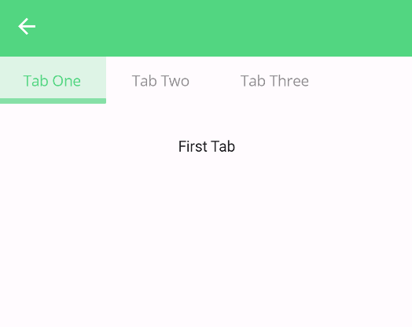 | 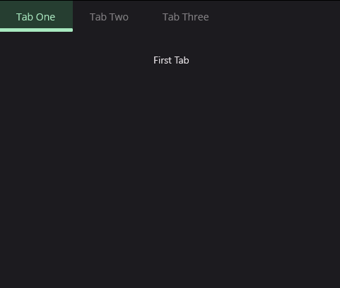 | 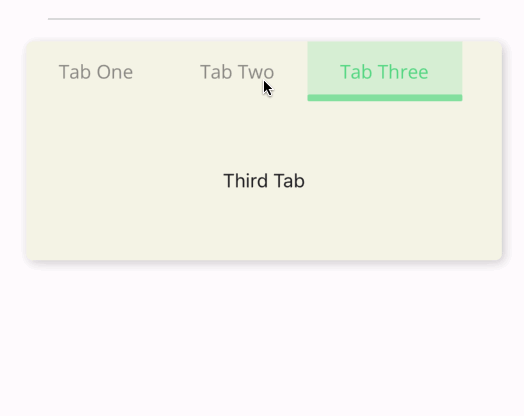 |
TabHeader Placement
Table tabs can be placed at the top, bottom, start or left of the tab view. You can set the TabPlacement property to Top, Bottom, Start or End to change the placement of the tabs. The default value is Top.
<material:TabView TabPlacement="Bottom">
<!-- ... -->
</material:TabView>
| Light - Android | Dark - Desktop | Light - iOS |
|---|---|---|
| 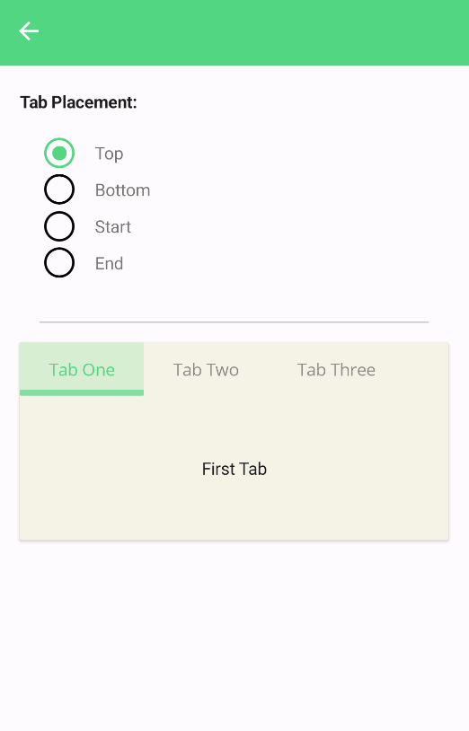 | 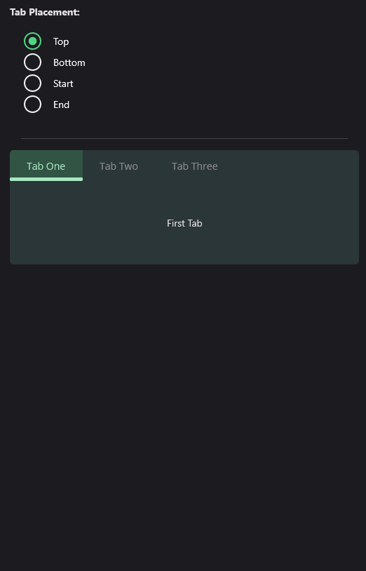 | 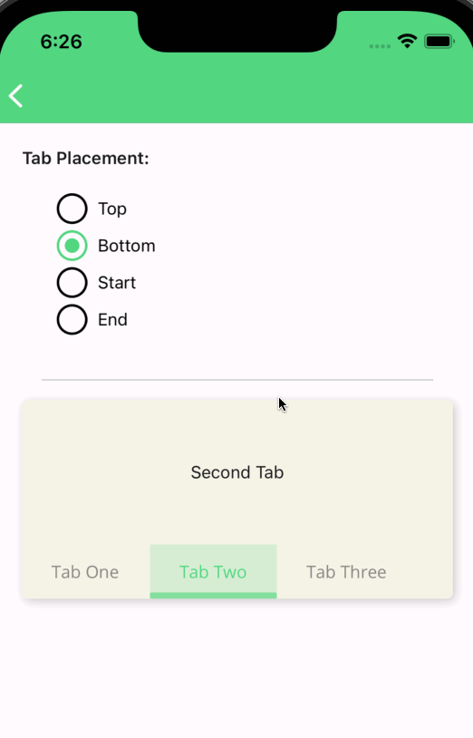 |
Custom Tab Header
You can customize the tab header by setting the TabHeaderItemTemplate property. The TabHeaderItemTemplate property is a DataTemplate that is used to render the tab header. The TabHeaderItemTemplate property is useful when you want to customize the tab header. In the datatemplate Command must be used in binding. That Command must be triggered when use tapped in the custom tab header.
Following parameters can be used in DataTemplate for binding:
Command: Command that is triggered when user tapped in the tab header.Must be used for functionality of tab view.Title: Title of tab.Data: It's used to bind custom data to tab header. You can pass this while definingTabItem.
<material:TabView>
<material:TabView.TabHeaderItemTemplate>
<DataTemplate>
<material:CheckBox
Text="{Binding Title}"
IsChecked="{Binding IsSelected}"
CheckChangedCommand="{Binding Command}"/>
</DataTemplate>
</material:TabView.TabHeaderItemTemplate>
<!-- ... -->
</material:TabView>
| Light - Mobile | Dark - Desktop |
|---|---|
| 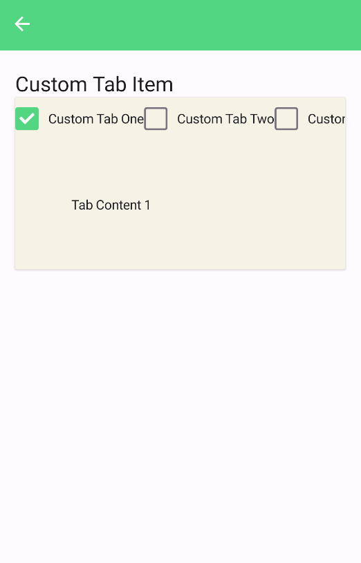 | 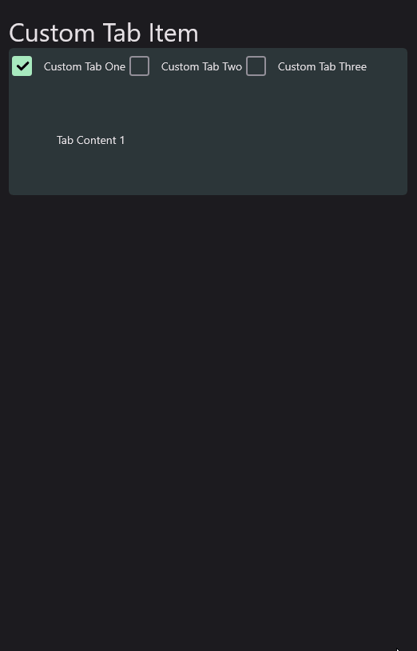 |
Also, tabs can be customized using Triggers according to the state of tab. DataTrigger can be used for styling tab item according to the state of tab. IsSelected property of TabItem can be used in DataTrigger.
<material:TabView>
<material:TabView.TabHeaderItemTemplate>
<DataTemplate>
<Button
Text="{Binding Title}"
Command="{Binding Command}">
<Button.Triggers>
<DataTrigger TargetType="Button" Binding="{Binding IsSelected}" Value="True">
<Setter Property="BackgroundColor" Value="{StaticResource SurfaceTint1}" />
<Setter Property="TextColor" Value="{StaticResource SurfaceTint3}" />
<Setter Property="ImageSource" Value="{FontImageSource FontFamily=MaterialRegular, Glyph={x:Static m:MaterialRegular.Home}, Color={StaticResource SurfaceTint1}}" />
</DataTrigger>
<DataTrigger TargetType="Button" Binding="{Binding IsSelected}" Value="False">
<Setter Property="BackgroundColor" Value="Transparent" />
<Setter Property="TextColor" Value="{AppThemeBinding Light={StaticResource OnSurface}, Dark={StaticResource OnSurfaceDark}}" />
<Setter Property="ImageSource" Value="{FontImageSource FontFamily=MaterialOutlined, Glyph={x:Static m:MaterialOutlined.Home}, Color={StaticResource SurfaceTint3}}" />
</DataTrigger>
</Button.Triggers>
</Button>
</DataTemplate>
</material:TabView.TabHeaderItemTemplate>
<material:TabItem Title="Custom Tab One">
<material:TabItem.Content>
<Label Text="Tab Content 1" Margin="60" />
</material:TabItem.Content>
</material:TabItem>
<material:TabItem Title="Custom Tab Two">
<material:TabItem.Content>
<Label Text="Tab Content 2" Margin="60" />
</material:TabItem.Content>
</material:TabItem>
<material:TabItem Title="Custom Tab Three">
<material:TabItem.Content>
<Label Text="Tab Content 3" Margin="60" />
</material:TabItem.Content>
</material:TabItem>
</material:TabView>
| Light - Mobile | Dark - Desktop |
|---|---|
| 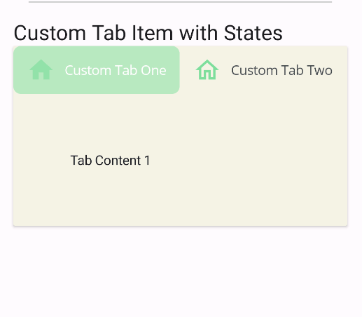 | 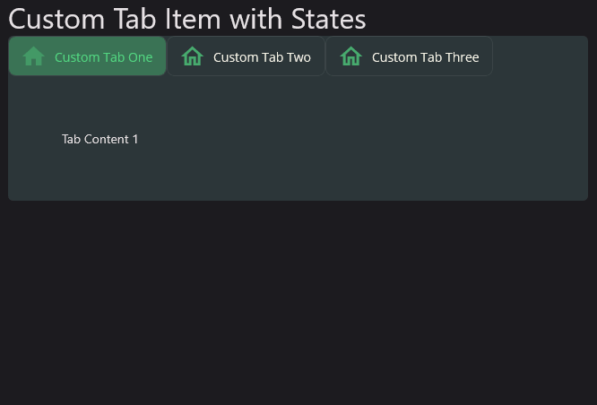 |
Tabs can be styles separately using HeaderTemplate property of TabItem. Use TabItem.HeaderTemplate property while defining TabItem in TabView.
When both of TabView.TabHeaderItemTemplate and TabItem.HeaderTemplate are defined, TabItem.HeaderTemplate will be used for that particular tab.
Even you can define DataTemplate tab by tab separetely.
<material:TabView>
<material:TabItem Title="Custom Tab One">
<material:TabItem.HeaderTemplate>
<DataTemplate>
<Button Text="{Binding Title}" Command="{Binding Command}">
<Button.Triggers>
<DataTrigger TargetType="Button" Binding="{Binding IsSelected}" Value="True">
<Setter Property="TextColor" Value="{StaticResource Primary}"/>
<Setter Property="Scale" Value="1.2"/>
</DataTrigger>
<DataTrigger TargetType="Button" Binding="{Binding IsSelected}" Value="False">
<Setter Property="TextColor" Value="Gray"/>
<Setter Property="Scale" Value="1"/>
</DataTrigger>
</Button.Triggers>
</Button>
</DataTemplate>
</material:TabItem.HeaderTemplate>
<material:TabItem.Content>
<Label Text="Tab Content 1" Margin="60" />
</material:TabItem.Content>
</material:TabItem>
<material:TabItem Title="Custom Tab Two">
<material:TabItem.Content>
<Label Text="Tab Content 2" Margin="60" />
</material:TabItem.Content>
</material:TabItem>
<material:TabItem Title="Custom Tab Three">
<material:TabItem.Content>
<Label Text="Tab Content 3" Margin="60" />
</material:TabItem.Content>
</material:TabItem>
</material:TabView>
| Light - Mobile | Dark - Desktop |
|---|---|
| 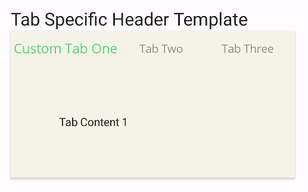 | 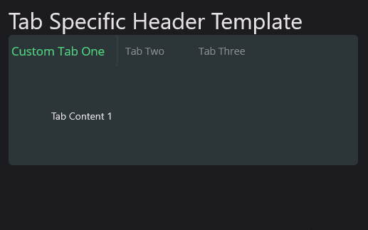 |
Dynamic Tabs
TabView supports dynamic tabs. You can add/remove tabs dynamically from a source. ItemsSource and Itemtemplate properties can be used for this purpose.
<material:TabView ItemsSource="{Binding TabItems}">
<material:TabView.ItemTemplate>
<DataTemplate>
<WebView Source="{Binding Url, Mode=TwoWay}" />
</DataTemplate>
</material:TabView.ItemTemplate>
</material:TabView>
And view model should be like this.
public class WebTabViewModel : UraniumBindableObject
{
public ObservableCollection<WebTabItem> TabItems { get; set; } = new()
{
new WebTabItem("https://www.bing.com/"),
new WebTabItem("https://google.com/"),
new WebTabItem("https://microsoft.com/"),
new WebTabItem("https://github.com/"),
};
}
public class WebTabItem : UraniumBindableObject
{
private string url;
private string title;
public WebTabItem(string url = null)
{
this.Url = url;
}
public string Url
{
get => url; set => SetProperty(ref url, value, doAfter: (_url) =>
{
if (Uri.TryCreate(_url, UriKind.RelativeOrAbsolute, out Uri uri))
{
Title = uri.Host;
}
});
}
public string Title { get => title; set => SetProperty(ref title, value); }
public override string ToString()
{
return Title;
}
}